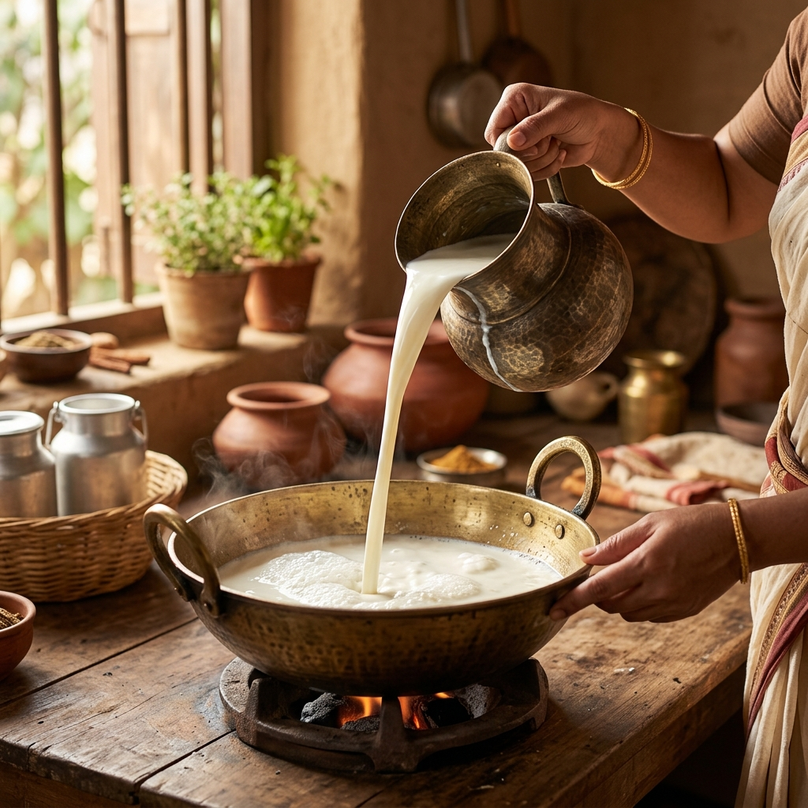
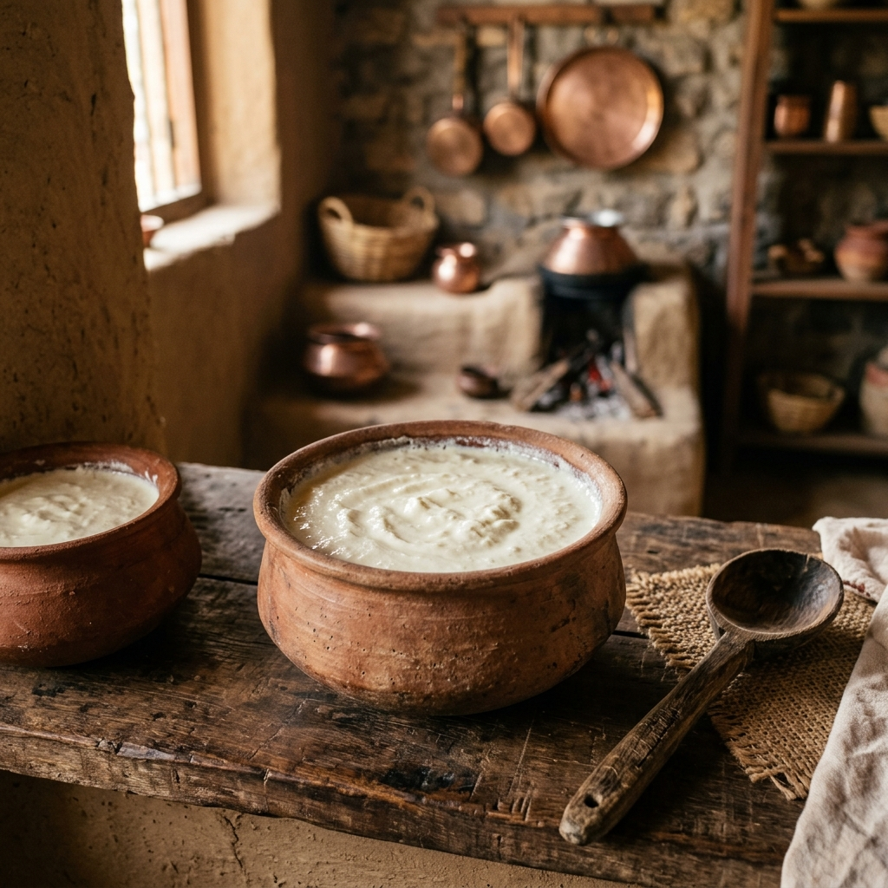
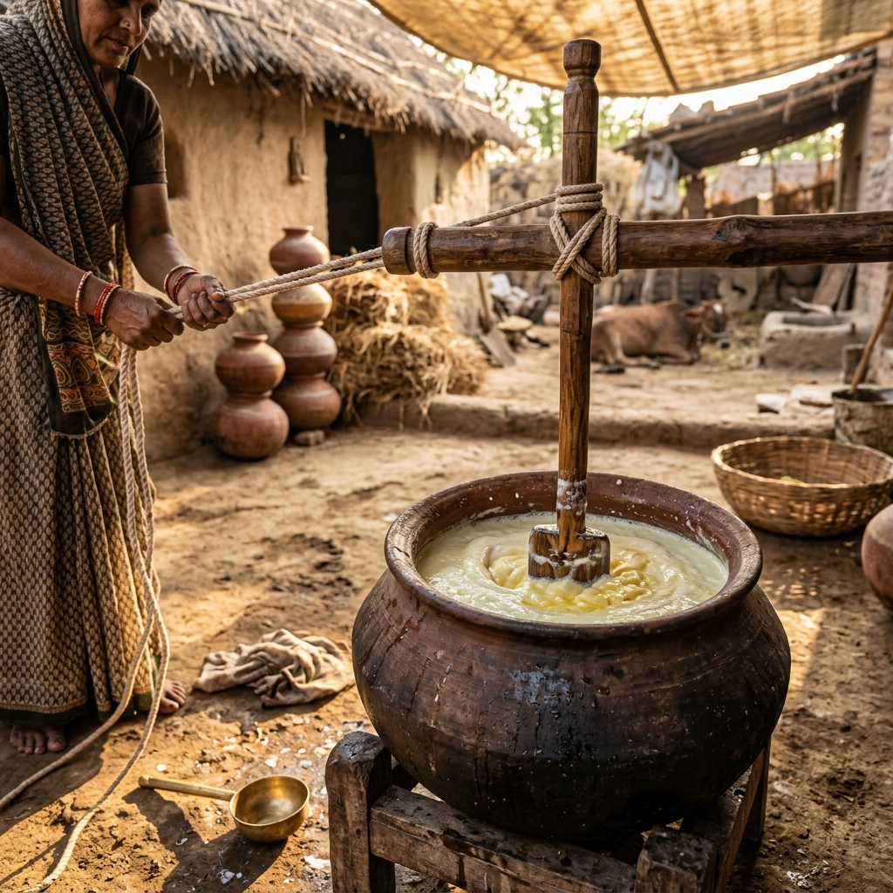
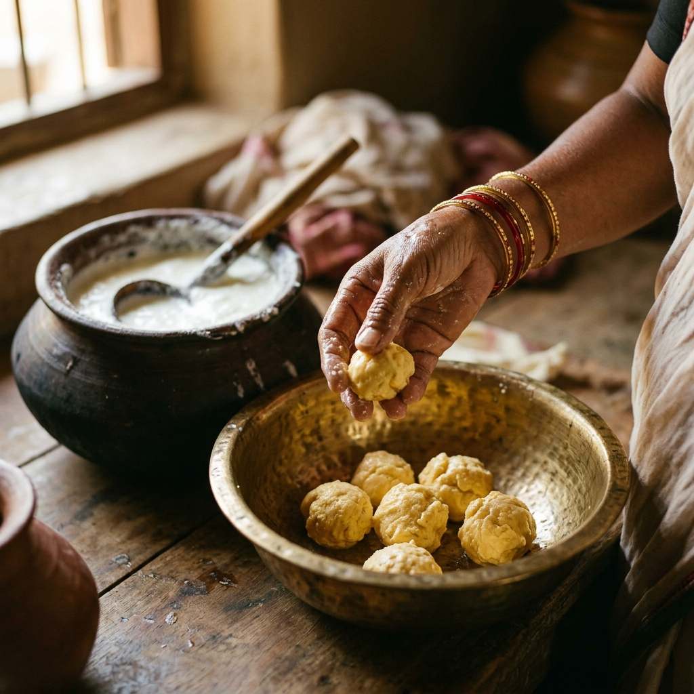
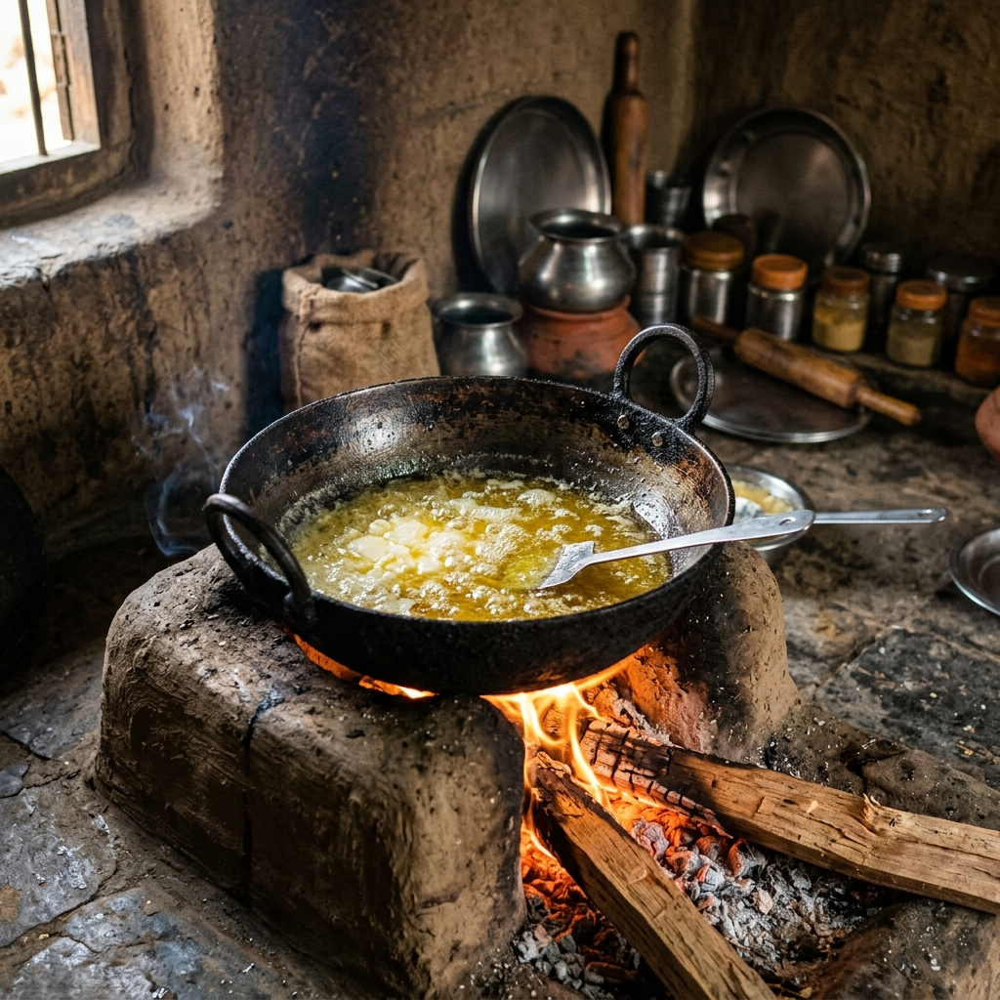

"Standard ghee is made by boiling raw cream in high-speed centrifuges. Adwait Ghee is slow-clarified from whole milk Desi cow curd churned by wooden staffs, maintaining maximum therapeutic value (Ojas)."
Before sunrise, our pure-breed Desi cows are milked by hand. We respect the cow's maternal bond, milking only after the calf has consumed its share of nourishing milk. The milk is gathered in brass vessels.

The gathered Desi cow milk is boiled in large brass pots, cooled naturally, and set into curd overnight by adding organic culture. It sets in heavy clay pots (Mith) which naturally maintain temperature and pH.

The whole curd is churned in the early hours (Brahma Muhurta) using a heavy wooden churner (Bilona) tied to a rope. The churner rotates bi-directionally, separating the fat molecules gently while retaining nutrients.

As the curd churns, golden butter (Makkhan) floats to the top. We separate the butter by hand and rinse it in fresh spring water. The residual buttermilk (Chhash) is given back to the farm soil.

The extracted butter is placed in brass vessels and boiled slowly on traditional wood stoves fueled by organic cow-dung patties. The low heat removes moisture and solid protein residues slowly.

When the butter turns clear and yields a distinct cardamom-like nutty aroma, the fire is put out. The liquid ghee is filtered using cotton sieves and poured into pre-heated glass jars. As it cools, it develops the signature premium granular (Danedaar) texture.

A visual comparison highlighting the differences between the traditional wood-fired Bilona method and commercial centrifugation.
Order a fresh batch clarified in the Brahma Muhurta yesterday.
Purchase Adwait Ghee